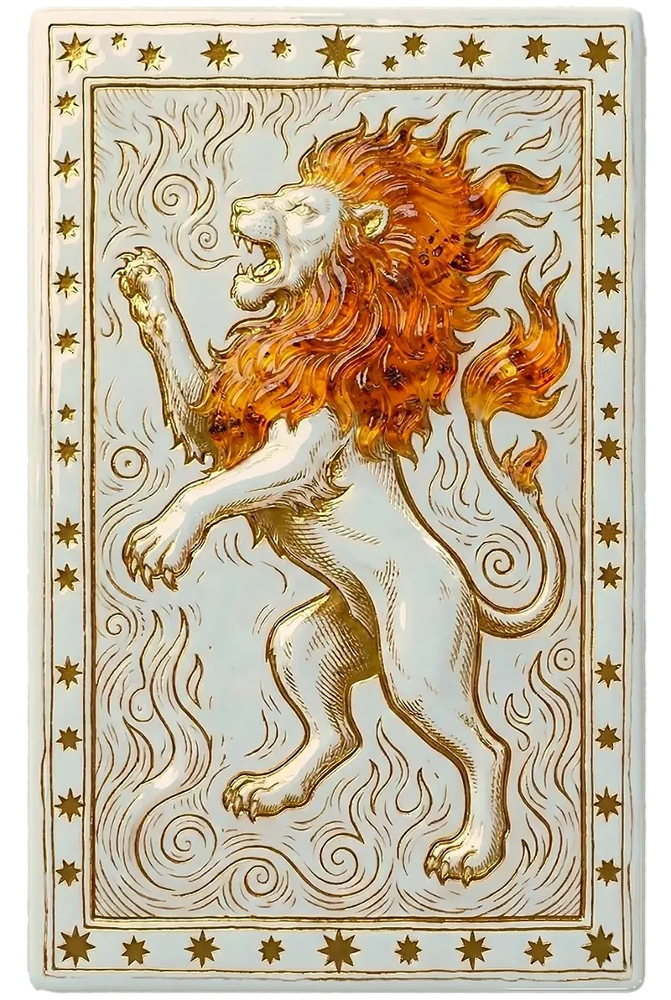

Amour
En amour, le Lion est passionné, protecteur et démonstratif. Il aime séduire, offrir, célébrer. Il a besoin d'un partenaire qui l'admire sincèrement et partage sa joie de vivre ; la froideur le fait fuir.

Le signe
Cinquième signe du zodiaque, le Lion est un signe de Feu fixe gouverné par le Soleil. Il incarne la créativité, la générosité et le besoin de rayonner.
Le Lion a besoin de briller, non par vanité, mais parce que c'est sa manière d'offrir quelque chose au monde. Chaleureux, généreux, loyal, il donne beaucoup et attend en retour de la reconnaissance. Il a le sens du spectacle, de la fête, de la grandeur.
Sa fierté est à la fois sa force et sa fragilité : il supporte mal l'indifférence et peut se blesser d'un manque d'égards. Sa leçon de vie consiste à briller sans avoir besoin d'applaudissements, à trouver en lui la source de sa propre lumière.
Amour
En amour, le Lion est passionné, protecteur et démonstratif. Il aime séduire, offrir, célébrer. Il a besoin d'un partenaire qui l'admire sincèrement et partage sa joie de vivre ; la froideur le fait fuir.
Travail
Arts, spectacle, direction, création, événementiel, enseignement : le Lion rayonne dans les rôles où il peut inspirer et être vu. Il est un leader naturel, à condition d'écouter son équipe.
Bien-être
Associé au cœur et au dos, le Lion gagne à prendre soin de sa posture et de son endurance. Le soleil, la danse et le jeu nourrissent sa vitalité.
« La vraie royauté du Lion, c'est de faire grandir ceux qui l'entourent. »
Chaque signe se divise en trois périodes d'environ dix jours, chacune teintée par un signe du même élément. Les dates varient légèrement selon les années.
Cinquième signe du zodiaque, le Lion est un signe de Feu fixe gouverné par le Soleil. Il incarne la créativité, la générosité et le besoin de rayonner.
La générosité, La loyauté, La créativité, Le charisme naturel, Le courage de s'exposer.
L'orgueil, Le besoin d'être admiré, Une tendance à vouloir tout diriger, La susceptibilité face à la critique.
Ses meilleures alliances sont Sagittaire (98 %), Bélier (95 %), Balance (95 %).